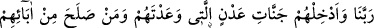
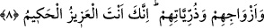

için sadece tevbekârlar için mağfiret talebinde bulunmuşlardır.
“Onları Cahîm azâbından koru!” diye bağışlanma dilerler.
Vikãyet ise bir şeyi kendisine rahatsızlık ve zarar veren bir şeyden korumak demek
olup mânâ: “Onları cehennemin azâbından koru” şeklindedir. Bu ifâde ile, önceden
hissetttirilen bir fikir açıkça zikredilmiş olmaktadır. Zira mağfiret zaten “azabın
düşürülmesi, yok edilmesi” anlamına gelir. Burada “kurtuluşun” sırf tevbe ile
gerçekleşmeyeceğine; ancak tevbe üzerinde sebatkâr olmakla, amelleri “görsünler ve
duysunlar” düşüncesinden kurtarmakla ve kalbi hevâ ve bid’atlerden arındırmakla
mümkün olabileceğine de işaret edilmektedir.
8. Rabbimiz! Onları da, onların atalarından, zevcelerinden, nesillerinden iyi
olanları da kendilerine vâdettiğin Adn cennetlerine koy. Şüphesiz azîz ve hakîm
olan sensin!
“Rabbimiz! Mü’minleri.. koy” ifadesi bir önceki âyetteki “onları koru” cümlesine
matuftur. İki cümle arasına “Rabbimiz!” nidâsının konulması meleklerin seslerini
yükselterek yalvarıp yakarmada ne kadar mübâlağa ettiğini göstermek içindir.
“Ve babalarından, eşlerinden, soylarından iyi olanları..” Atalarının salâh
derecesinden alt seviyede de olsa genel mânâda cennete girmeye hak kazandıracak bir
salah ile sâlih olanları da müminlerle birlikte “kendilerine söz verdiğin Adn
cennetlerine koy.”
Cenâb-ı Hak, “Allah’tan başka hiçbir ilah yoktur! Hz. Muhammed (s.a.) de O’nun
peygamberidir” diyenlerin Adn cennetlerine gireceğine söz vermiştir. Bu giriş ya ilk
baştan ya da isyanları karşılığında azaplarını çekmelerinin ardından gerçekleşir.
“Adn cennetlerine..” yâni ikâmet bahçelerine.
Rivayet edildiğine göre Ömer b. Hattab (r.a) Ka’bü’l-Ahbar’a: “Adn cennetleri
denen cennet nedir?” diye sormuş; o da: “Cennette, peygamberlerin ve âdil idarecilerin
gireceği altın saraylardır” diye cevap vermişti. Buna göre, Adn cennetleri avâmın değil,
özel birtakım insanların makamı olmaktadır. Nitekim Firdevs de böyledir. Çünkü her bir
cennetin kendine özgü bir amel tarzı vardır. Amel ne denli özel, ne kadar yüksek olursa
girilecek cennet de o denli yüce, o kadar yüksek olacaktır.
Müminlerin cennetteki mutlulukları tamama ersin ve gönül aydınlıkları ikiye katlansın
diyedir ki melekler böyle duâ etmektedir.
Burada, tevbekâr bir kimsenin bereketinin atalarına ve çoluk çocuğuna da ulaşacağına
ve bu sâyede cennete ve cennet nimetlerine bunların da nâil olacağına dâir bir işâret
vardır.
Saîd b. Cübeyr der ki: Mümin cennete girdiğinde “Hani nerede benim babam?”,